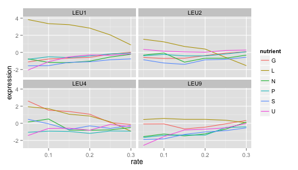
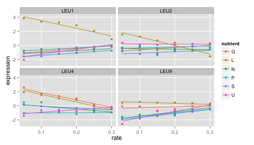
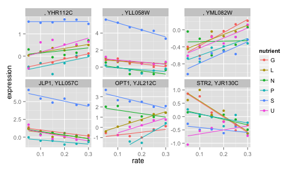

Interactive analytics and data visualisation in R
Case study: gene expression in starvation
Through the process of gene regulation, a cell can control which genes are transcribed from DNA to RNA- what we call being "expressed". (If a gene is never turned into RNA, it may as well not be there at all). This provides a sort of "cellular switchboard" that can activate some systems and deactivate others, which can speed up or slow down growth, switch what nutrients are transported into or out of the cell, and respond to other stimuli. A gene expression microarray lets us measure how much of each gene is expressed in a particular condition. We can use this to figure out the function of a specific gene (based on when it turns on and off), or to get an overall picture of the cell's activity.
Brauer 2008 used microarrays to test the effect of starvation and growth rate on baker’s yeast (S. cerevisiae, a popular model organism for studying molecular genomics because of its simplicity). Basically, if you give yeast plenty of nutrients (a rich media), except that you sharply restrict its supply of one nutrient, you can control the growth rate to whatever level you desire (we do this with a tool called a chemostat). For example, you could limit the yeast's supply of glucose (sugar, which the cell metabolizes to get energy and carbon), of leucine (an essential amino acid), or of ammonium (a source of nitrogen).
"Starving" the yeast of these nutrients lets us find genes that:
- Raise or lower their activity in response to growth rate. Growth-rate dependent expression patterns can tell us a lot about cell cycle control, and how the cell responds to stress.
- Respond differently when different nutrients are being limited. These genes may be involved in the transport or metabolism of those nutrients.
Featured R packages
install.packages(c("readr", "tidyr", "dplyr"))
Get the data and tidy it
require(readr)
original_data = read_delim("~/Downloads/Brauer2008_DataSet1.tds", delim = "\t")
## View(original_data) # opens a spreadsheet view in RStudio
dim(original_data)
## [1] 5537 40
Fix the name column by splitting on ||, remove white space and drop unecessary variables. We also want to ensure that we have tidy data -- each variable should be one column - the column headers are values not variable names.
require(dplyr)
require(tidyr)
cleaned_data = original_data %>% separate(NAME, c("name", "BP", "MF", "systematic_name",
"number"), sep = "\\|\\|") %>% mutate_each(funs(trimws), name:systematic_name) %>%
select(-number, -GID, -YORF, -GWEIGHT) %>% gather(sample, expression, G0.05:U0.3) %>%
separate(sample, c("nutrient", "rate"), sep = 1, convert = TRUE)
The above code chunk is doing a lot of processing very sucinctly using the pipe operator (see the magrittr package for details). The gather() function melts the data - instead of one row per gene, we now have one row per gene per sample. We've gathered 36 columns together into two variables.
Visualise the data
Classical approach
library(ggplot2)
cleaned_data %>% filter(name == "LEU1") %>% ggplot(aes(rate, expression, color = nutrient)) +
geom_line()

cleaned_data %>% filter(BP == "leucine biosynthesis") %>% ggplot(aes(rate, expression,
color = nutrient)) + geom_line() + facet_wrap(~name)

cleaned_data %>% filter(BP == "leucine biosynthesis") %>% ggplot(aes(rate, expression,
color = nutrient)) + geom_point() + geom_smooth(method = "lm", se = FALSE) +
facet_wrap(~name)

cleaned_data %>% filter(BP == "sulfur metabolism") %>% ggplot(aes(rate, expression,
color = nutrient)) + geom_point() + geom_smooth(method = "lm", se = FALSE) +
facet_wrap(~name + systematic_name, scales = "free_y")
## Warning: Removed 2 rows containing missing values (stat_smooth).
## Warning: Removed 1 rows containing missing values (stat_smooth).
## Warning: Removed 3 rows containing missing values (geom_point).

Interactive approach: SHINY!!
Convert this basic shiny app from ggplot2 to ggvis. The aim here is two fold:
1. understand how the components link within the shiny app; and
2. Move beyond static plots with ggvis.
Try adding a line of best fit using geom_smooth() in ggplot2 or layer_model_predictions() in ggvis.
Reference
- Robinson D (2015). "Cleaning and visualizing genomic data: a case study in tidy analysis", blog post. http://varianceexplained.org/r/tidy-genomics/
- Brauer et al. (2008). Coordination of Growth Rate, Cell Cycle, Stress Response, and Metabolic Activity in Yeast,